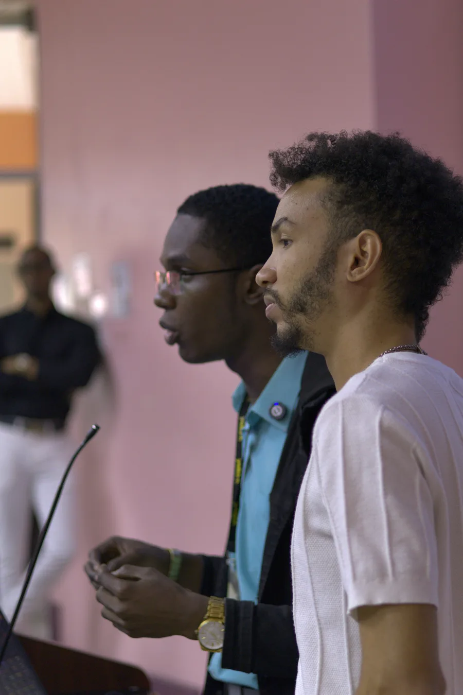
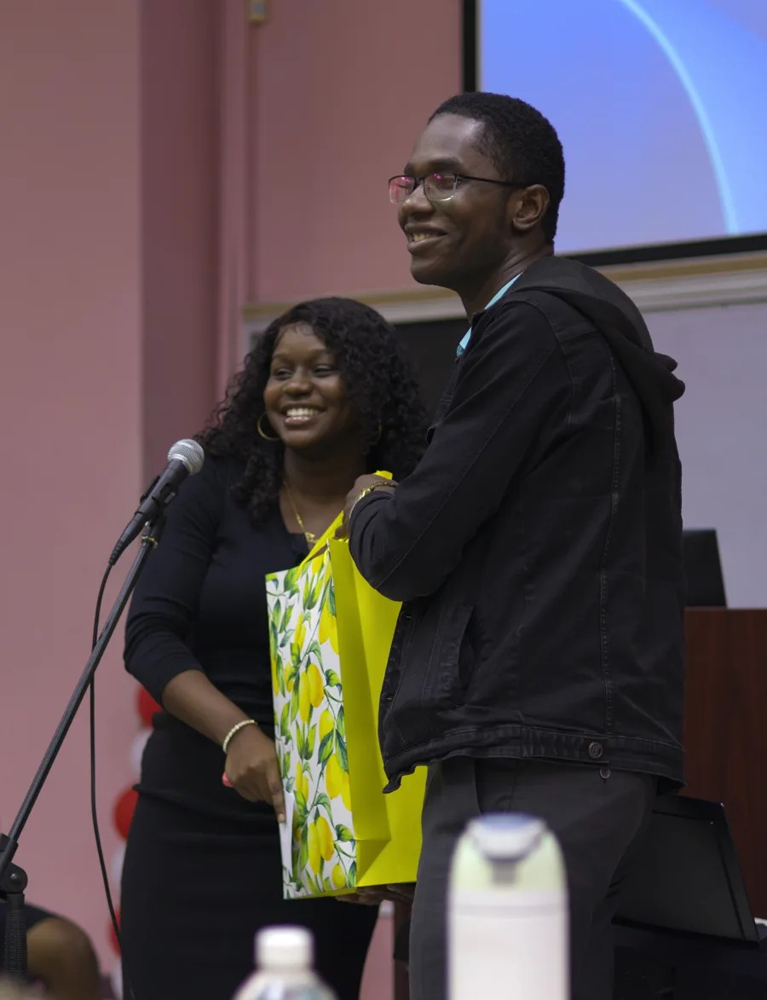

Brand partners
Products, platforms, tools, or services aligned with digital strategy, content creation, productivity, creative workflows, or Caribbean business. Sponsored content, campaigns, and brand integrations.
Speaking, partnerships, media, and collaborations
For speaking invitations, brand partnerships, media requests, workshops, creator collaborations, and aligned opportunities around digital brand strategy, content, voice, and Caribbean creative work.
Whether it’s content, voiceover, writing, or digital strategy, the underlying job is the same: take messy ideas and make them easier to understand and act on.
I’m building this speaking lane intentionally, so I’m especially interested in conversations, workshops, panels, and sessions where practical clarity matters more than performance: rooms with creators, small business owners, students, and teams who need useful thinking they can apply.
Caribbean and Jamaican context welcome by default. International conversations welcome where the perspective adds something the room would otherwise be missing.

Products, platforms, tools, or services aligned with digital strategy, content creation, productivity, creative workflows, or Caribbean business. Sponsored content, campaigns, and brand integrations.
Journalists, producers, and event organisers for podcast interviews, panels, talks, event sessions, and media features. Particularly welcome for Caribbean digital, creative industry, and business-facing conversations.
Agencies, studios, and practitioners looking for a freelance partner with strategy, content, voice, and digital brand expertise. Workshop co-facilitators, campaign partners, and studio collaborations.
Workshops for entrepreneurs, digital skills sessions, business training, and community education initiatives. Strongest fit: practical digital, communication, and content topics with real-world application.
In 2025, I was invited to speak at the launch of The UWI Marketing Societe. I brought Neil Johnson, one of my mentees and a UWI Marketing alumnus, into the session as my co-presenter to add student and alumni context to the conversation.
The session gave me a practical way to connect brand, digital presence, creative work, and career direction for a student audience.
I am building this speaking lane intentionally, with a focus on rooms where strategy, story, digital tools, and real creative life meet.

Use the contact form for speaking, partnership, media, and collaboration requests. It keeps the details in one place, routes the right subject line, and makes it easier to respond properly.
The fit is strongest when the opportunity needs clarity, taste, communication, and practical digital fluency, not just another name attached to a campaign.
Useful for tools, platforms, services, events, and products connected to creators, small businesses, communication, digital presence, workflow, or practical brand-building.
Good for conversations around digital clarity, content, service-business systems, voice, Caribbean creative work, and building useful things with practical constraints.
Strong fit when the audience needs practical thinking: clearer websites, better follow-through, content systems, offer clarity, and digital communication.
Media kit and bio are being finalised. The buttons are here so you know what will be available. If you need one now, send a note and I’ll share the relevant details directly.
Short bio, positioning, topics, links, and contact details in one place.
A quick, clean bio for event pages, podcast notes, panels, and partner decks.
Possible workshop, panel, and interview themes that match my strongest lanes.
A clearer view of possible formats, working style, and partner-fit examples.
I am a better fit when the collaboration benefits from a systems-minded creative lens, a grounded Caribbean perspective, practical digital brand thinking, or someone who can make a complex idea easier to understand. If there is a clear connection between the audience, the work, and the outcome, I am interested.
My Bible-based values shape what I can comfortably promote, speak on, or attach my name to. I’m not the right fit for opportunities centred on the following, and I prefer to flag that early so we can both spend our time where it actually pays off.
If an opportunity isn’t aligned, I’ll say so clearly and, where I can, point you in a better direction.
Send the clearest version of the opportunity. Include the ask, timeline, format, useful links, and why you think the fit makes sense.